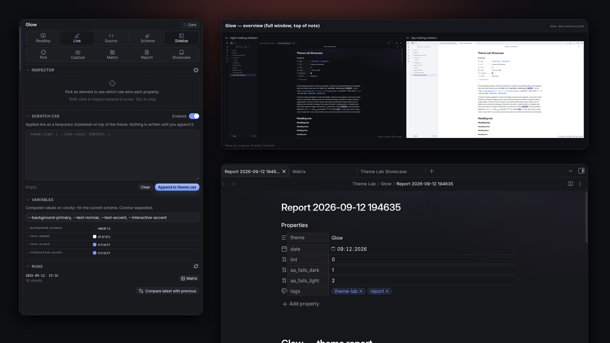
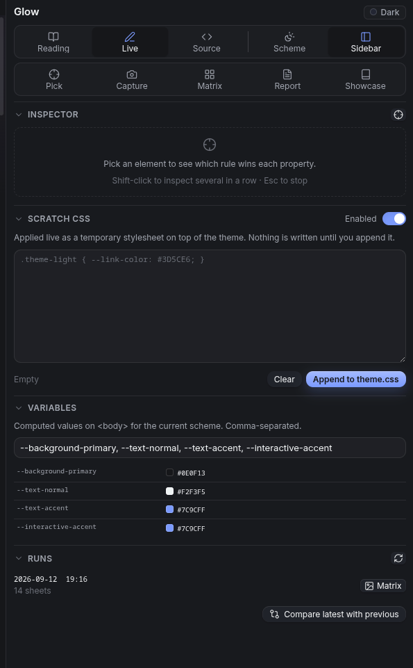
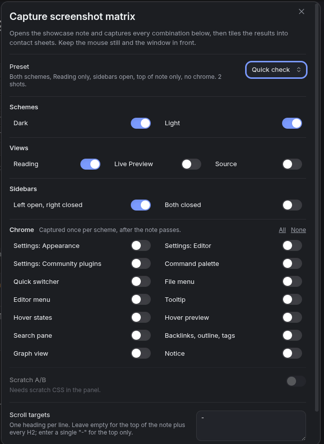
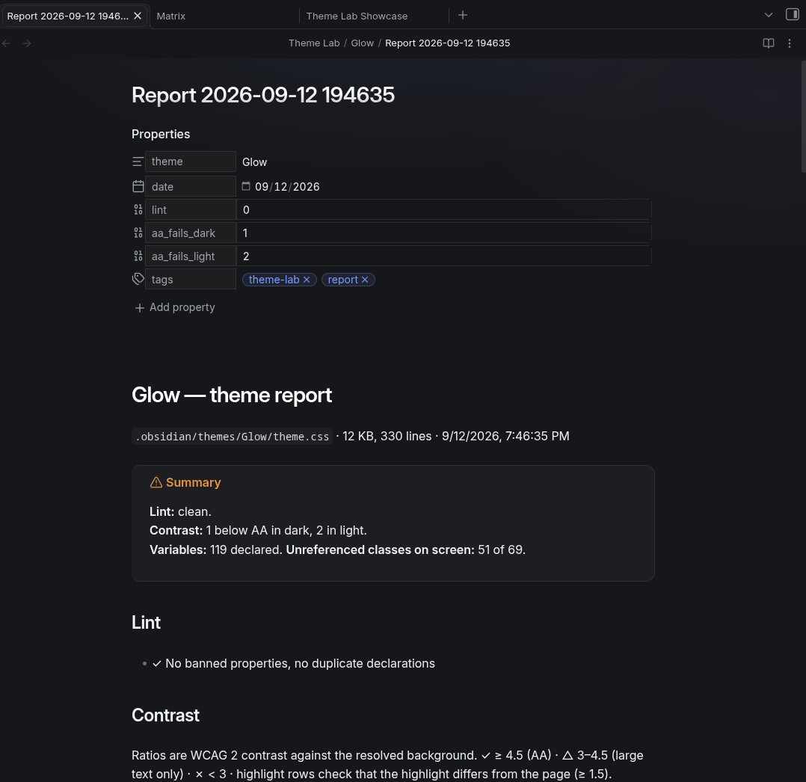
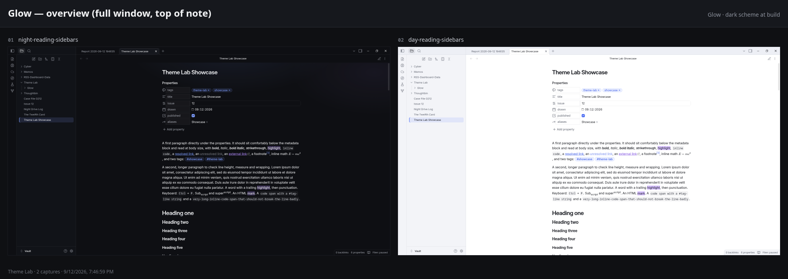

Click any element and see which CSS rule wins. Capture every scheme × view × sidebar combination into contact sheets. Lint, contrast-check and inventory a theme in one report.

Everything a theme author does by hand, done by the plugin — and written into your vault as notes and images.
Click anything. Get the DOM path, the pruned HTML, the computed values, and every matching rule with specificity and origin — with a ★ on the declaration that actually won each property. "Why didn't my rule apply?" in one click.
Dark and light × Reading, Live Preview, Source × sidebars open and closed, at the top of the note and every H2, paging through long sections. Then fourteen chrome captures per scheme: settings, palette, switcher, menus, tooltips, hover, preview, search, sidebar, graph, notice.
A hundred captures become a dozen labelled sheets you can actually review — one per combination, an overview, one for the chrome. Each capture also gets a 1200×800 listing crop and a 1920-wide hero.
Every Markdown feature a theme has to style: properties, inline formatting, six headings, lists and tasks with custom states, all thirteen callouts plus the odd ones, code, tables, embeds, math, Mermaid, footnotes — and a checklist of the chrome.
The lint the community review runs, WCAG contrast for both schemes side by side, every declared variable with its dark and light value, variables set in one scheme only, and the Obsidian classes on screen the theme never mentions.
Try CSS live in the panel. Run the matrix with Scratch A/B to get a pixel-diff sheet of what changed, or compare any two runs. Then append it to theme.css with one button.
Built with Obsidian's own components, so it follows whatever theme is active — including the one you're building.




The loop, without the reloading and squinting.
Matrix.md in the run folder and look at the sheets.Open Theme Lab panelCreate or open the showcase noteCapture screenshot matrixpresets: Full review · Quick check · Editor pass · Chrome only · ArtworkInspect elementclick to copy a CSS reportWrite theme reportvariables, contrast, lintCompare latest matrix run with the previous oneCapture one screenshot nowToggle dark/light schemeFrom the community list, or three files by hand.
main.js, styles.css and manifest.json from the latest release into .obsidian/plugins/theme-lab/, then enable it.capturePage, and real pointer and right-click events make hover states and menus appear. Nothing leaves your machine..obsidian/
plugins/
theme-lab/
main.js
styles.css
manifest.json
Theme Lab/ in your vault
Glow/
2026-09-12 194652/
Matrix.md
sheets/
shots/
Report 2026-09-12 …mdBare version numbers as tags; releases are built by the workflow.
The themes were built with this plugin.